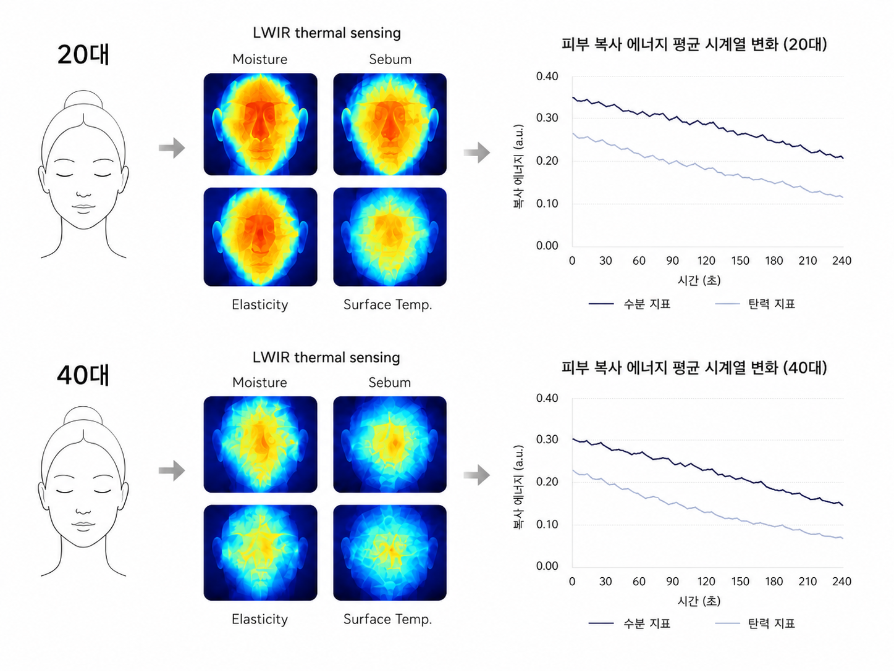
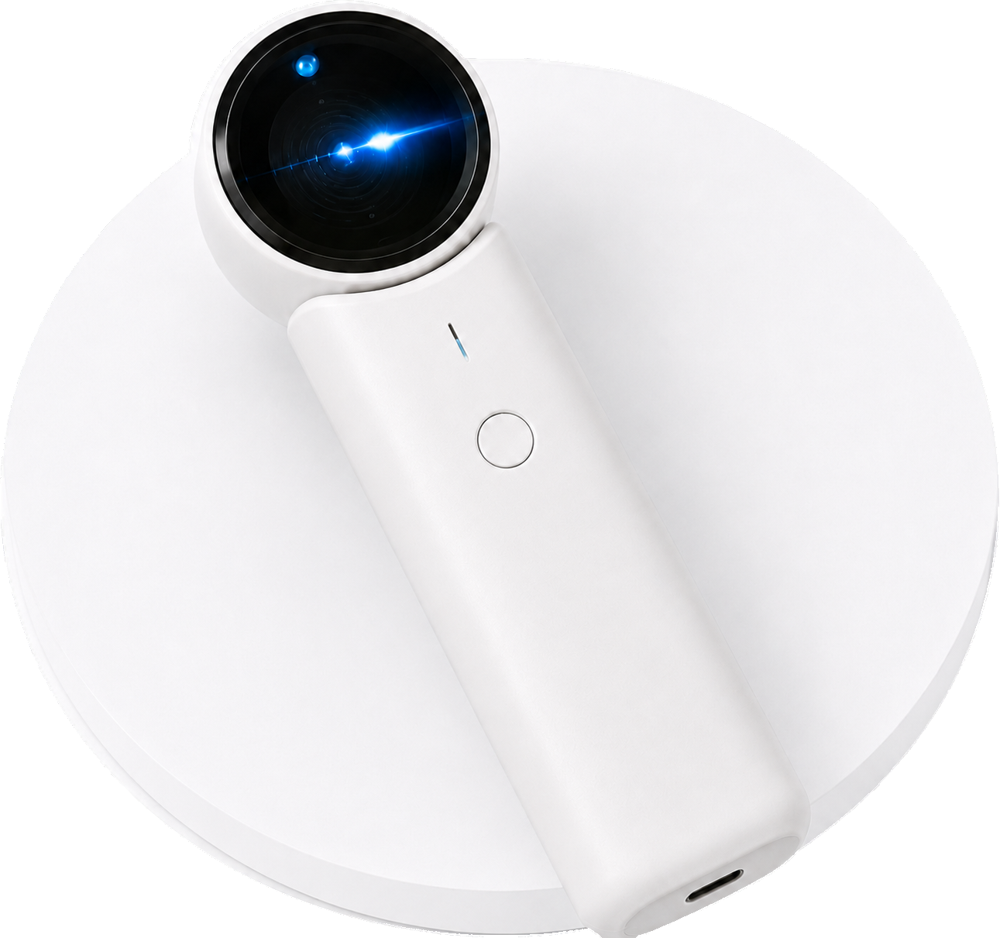
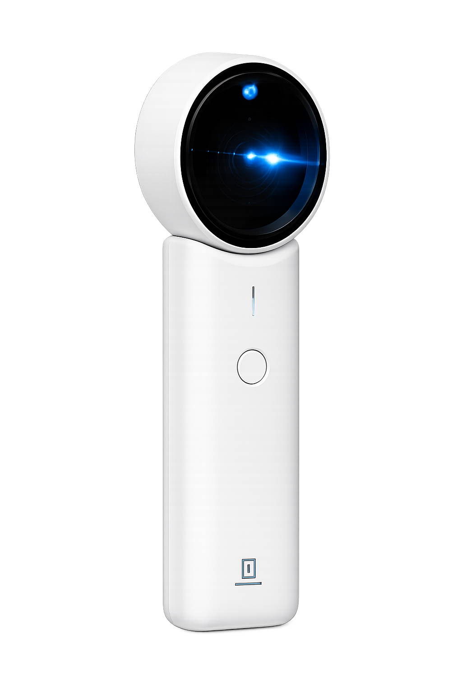
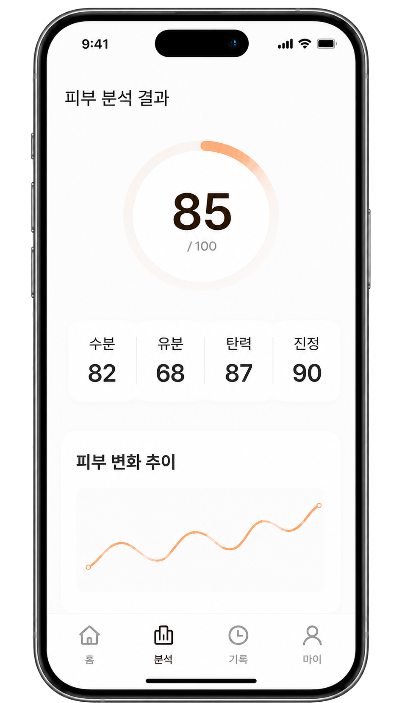

BEAUTY
피부를 데이터로,
스킨케어를 초개인화로
비접촉 광학 센서로 수분·유분·탄력 등 피부 상태를 정량 데이터로 측정합니다. 측정값은 맞춤형 스킨케어 추천과 화장품 R&D 개발 데이터로 이어져, 피부샵·클리닉·화장품 소매점과 스킨케어 브랜드(B2B), 홈케어 디바이스 사용자(B2C) 모두에게 근거 기반 데이터를 제공합니다.

비접촉 광학 센서로 수분·유분·탄력 등 피부 상태를 정량 데이터로 측정합니다. 측정값은 맞춤형 스킨케어 추천과 화장품 R&D 개발 데이터로 이어져, 피부샵·클리닉·화장품 소매점과 스킨케어 브랜드(B2B), 홈케어 디바이스 사용자(B2C) 모두에게 근거 기반 데이터를 제공합니다.
원적외선(LWIR, Long-Wave Infrared) 특성 기반 비접촉 내부 상태 진단 및 품질 예측 기술을 피부에 적용한 제품입니다. 생물·바이오소재의 내부 상태(수분, 경도, 물성 등)를 예측하는 FINSIDE의 공용 원천기술을 뷰티 영역에 적용한 OSMU(One Source Multi-Use) 스핀오프로, 접촉 없이 피부의 수분·유분·탄력 상태를 정량 데이터로 측정하고 AI 기반 모바일 연동 앱으로 결과를 제공하는 프로토타입까지 개발되어 있습니다.

LWIR(장파장 적외선, 8~14μm 대역) 기반 비접촉 측정으로 피부 내부 상태를 정량적으로 추정합니다.

비접촉 측정으로 빠르고 정확하게, 누구나 쉽게 피부 데이터를 확인합니다.
전문 파트너와 소비자를 연결하여, 정확한 피부 데이터 기반의 스킨케어 경험을 확장합니다.


※ 수치는 2024년 기준 목표치이며, 시장 데이터는 Grand View Research 기준입니다.